Tunis · Belvédère
RestaurantLe Giardino
Saveurs méditerranéennes, faites maison, sous les plantes de la terrasse.
- Fait maison
- Cave
- Terrasse
- Climatisation
Du lundi au samedi, de 12h à minuit
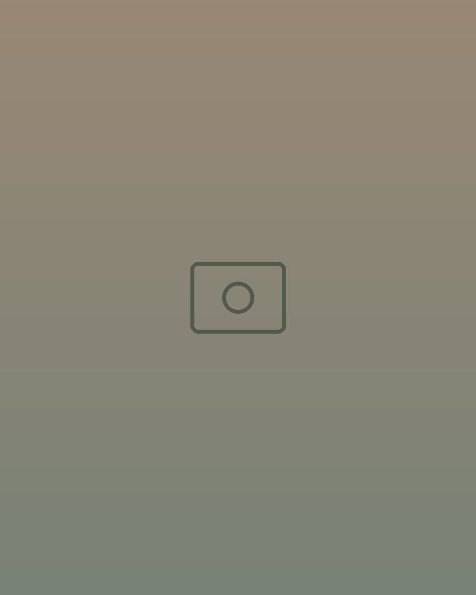
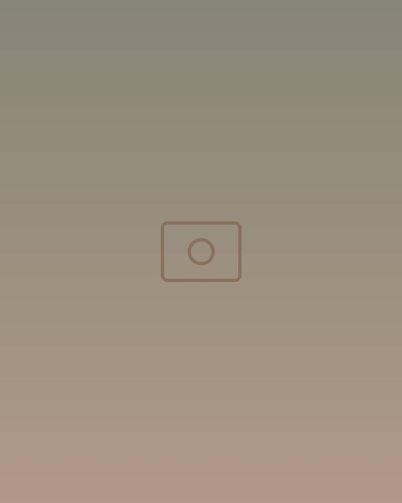
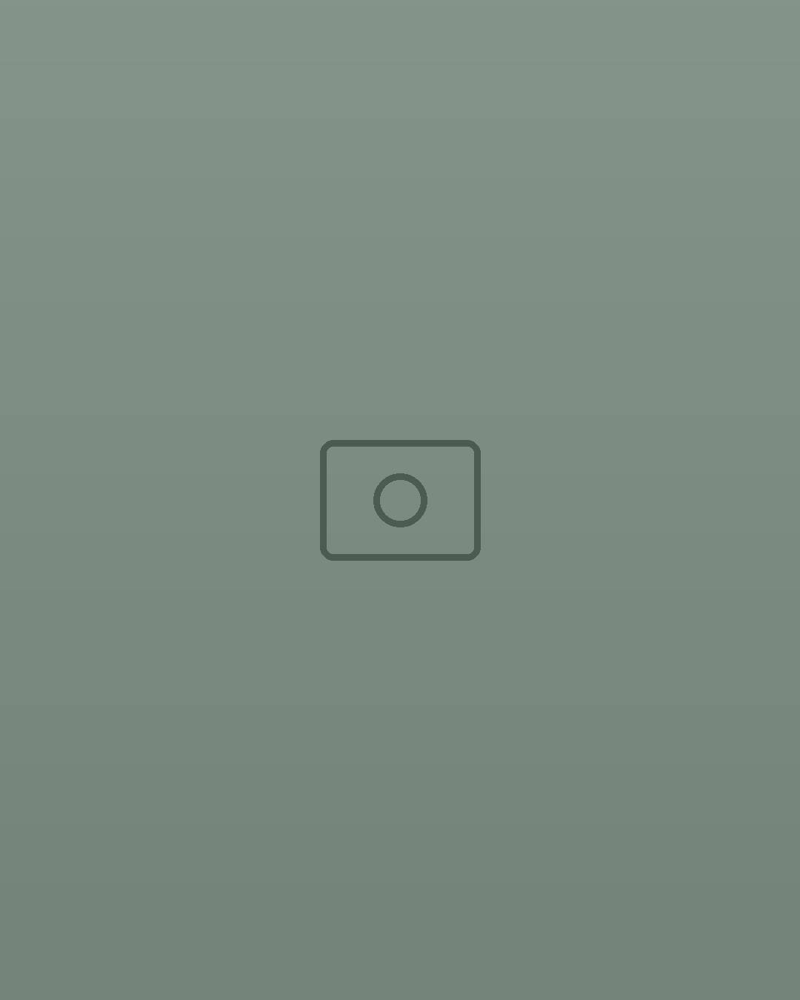
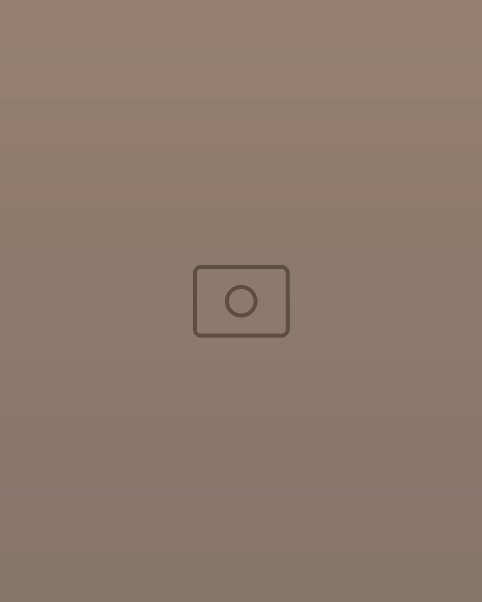
La maison
Depuis 1961, dans ses détails
Une adresse où l’on revient presque naturellement : un dîner à deux, un verre entre amis, une table qu’on aime retrouver.
- Le bruit de l’eauLa fontaine qui coule sans interruption, depuis toujours.
- Le zelligeLégèrement écaillé là où les mains se sont posées le plus souvent.
- La terrasseLa lumière passe entre les plantes ; climatisation à l’intérieur.
« Les carreaux verts, la lumière douce, la fontaine : on se croit en voyage, à deux pas de chez soi. »Le Giardino
La table
La Méditerranée, fait maison
Des ingrédients simples et vivants : le parfum iodé des fruits de mer, le rouge franc de la tomate, le citron, l’olive. Et un dressage qui fait partie de l’expérience.
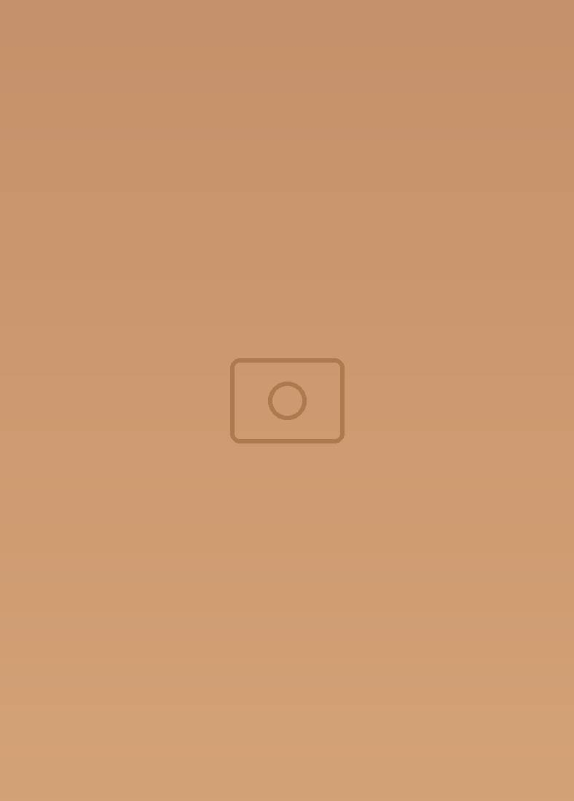
Spaghettis fruits de mer
Sauce tomate mijotée lentement, fruits de mer encore parfumés d’iode.
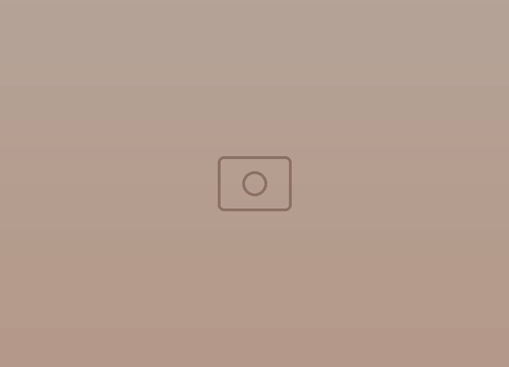
Pasta aux fruits de mer
Le goût salin de la Méditerranée, des pâtes généreuses.
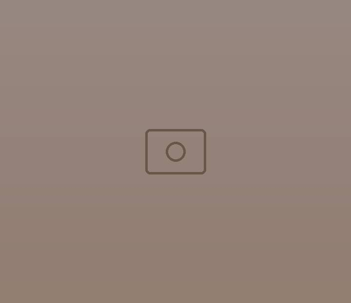
Escalope croustillante
Sauce barbecue, un incontournable de l’été.
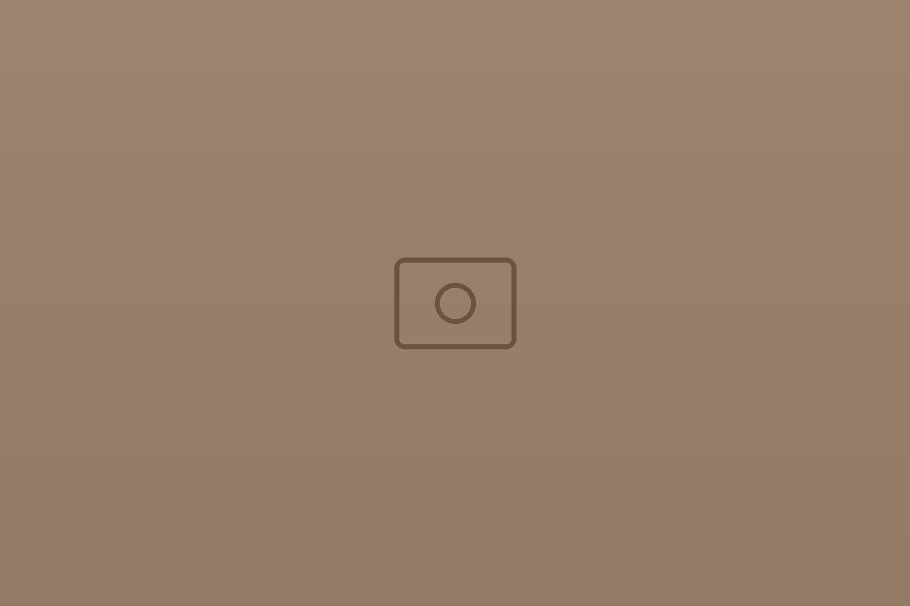
Les nuits en terrasse
Des plats pensés pour les soirées d’été et les têtes-à-têtes qui s’éternisent.
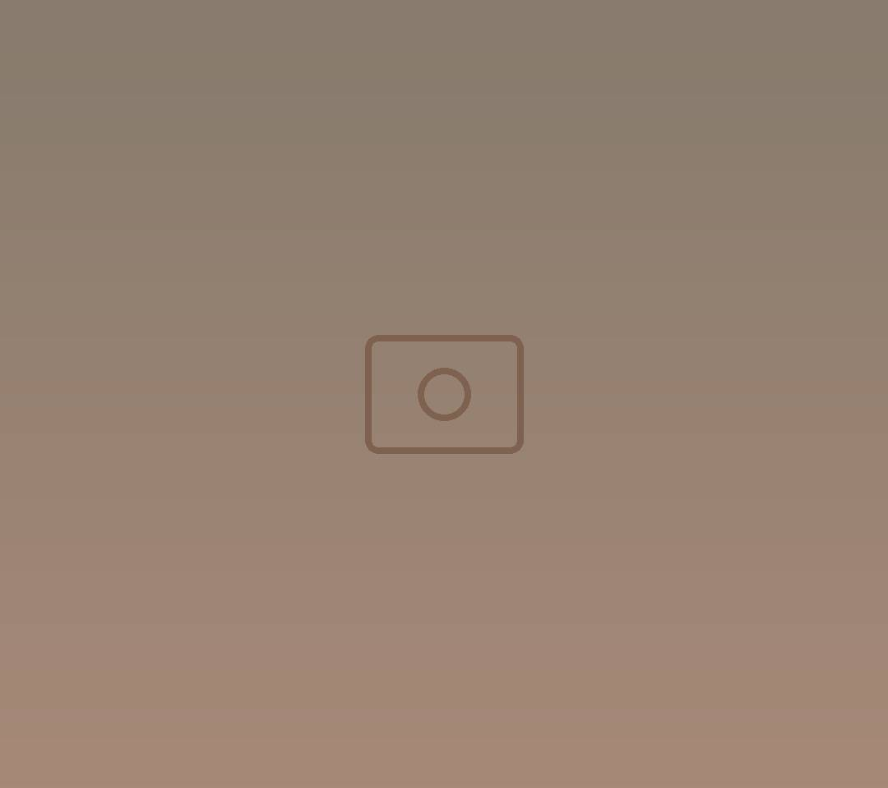
À partager
Quelques plats posés au centre, pour que chacun se serve.
Aussi à la carte : le carpaccio d’aubergine, fin et fondant, réveillé par la ricotta et le tahini.
La carte complète et les suggestions du moment : sur Instagram
Ambiance
Tout est en place, sauf vous
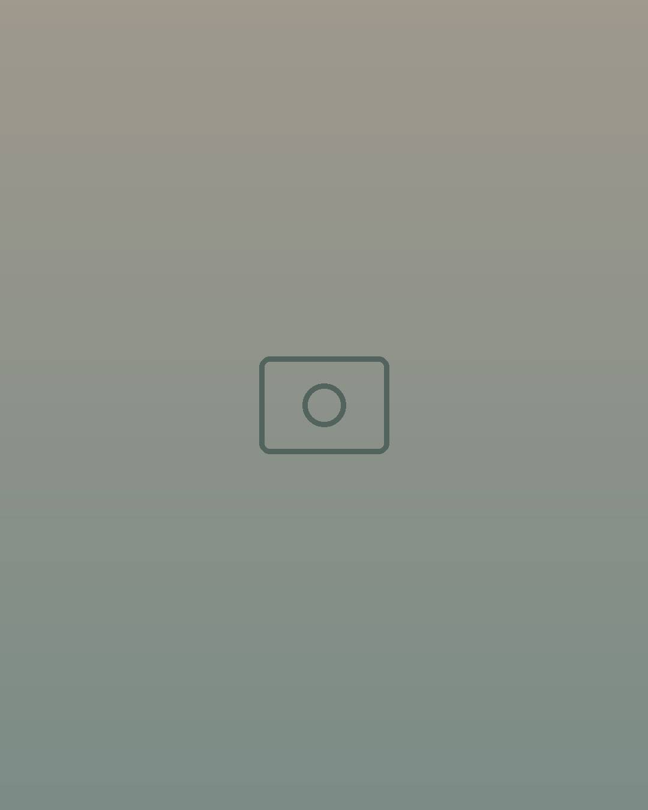
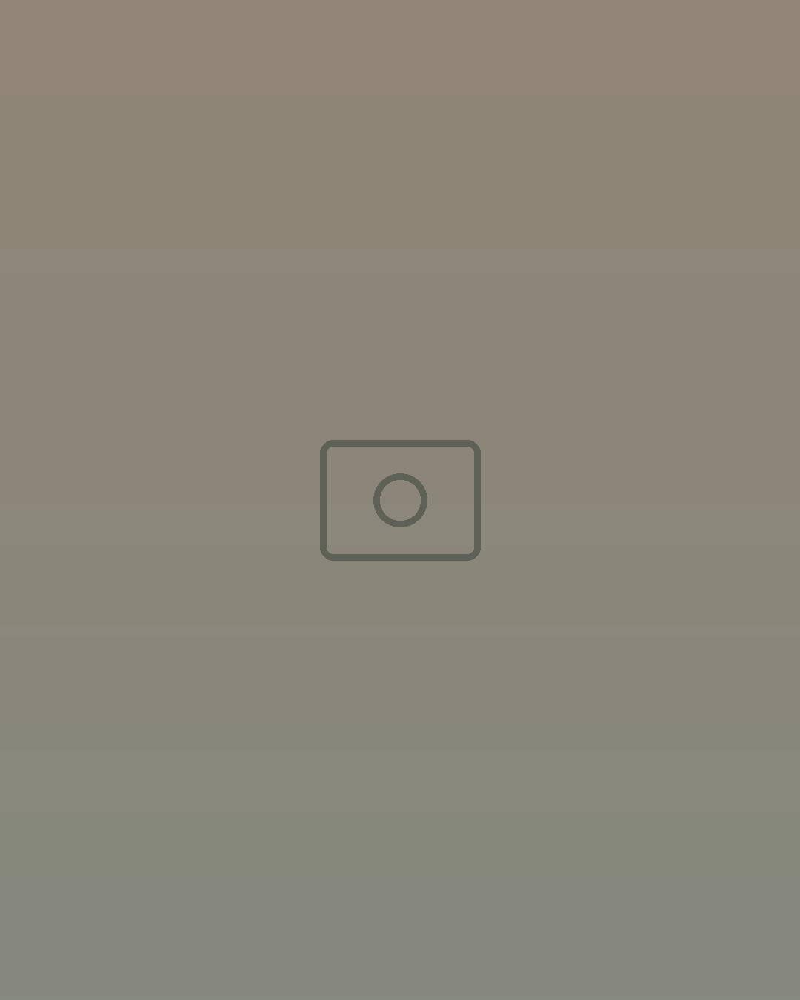
Réserver
Votre table vous attend
Centre-villeBelvédère, Tunis
- Ouvert
- Du lundi au samedi, 12h – 00h
- Fermé
- Le dimanche
- Tél.
- 00 000 000
- Réservation
- Par téléphone